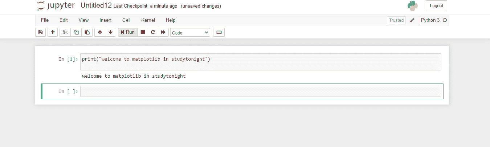

Matplotlib PyPlot API
在本教程中，我们将详细介绍 Matplotlib 中的 Pyplot API，帮助您了解 Pyplot API 在 Matplotlib 中的使用。
matplotlib.pyplot基本上是命令风格函数的集合，这有助于使 Matplotlib 像 MATLAB 一样工作。
pyplot主要是打算在 Matplotlib 中制作互动剧情和简单案例的程序化剧情生成。pyplot 中的各个功能对图形做了一些改变，比如有创建图形的功能，有在图形中创建绘图区域的功能，有在绘图区域中绘制一些线条的功能，有用标签装饰图形的功能等等。
Jupyter 笔记本中的新笔记本
如果你想在 Jupyter 笔记本中创建一个新的笔记本来存放你的作品，那么我们在之前的教程中已经向你展示了这个选项。现在，当你点击“新建”按钮时，你可以选择 Python3、终端、文件夹等。
只需点击 Python3 ，就会有一个 Python 笔记本为你保存，扩展名为(.ipynb)。
让我们给你看一张图片，然后你就会明白:

现在在这个笔记本中，你可以运行你的命令，可以使用 Matplotlib 绘制任何类型的图、直方图或任何你想要的东西，运行它，然后保存它。
不同类型的地块
现在让我们讨论可以借助 Matplotlib 库可视化的不同类型的图:
酒吧 这将创建一个酒吧情节。
hist 这将创建一个直方图。
hist2D 这将创建一个二维直方图。
饼图 这将创建一个饼图。
盒子图 这将创建一个方块和触须图。
剧情 这有助于剧情主线。
散点 这将用于绘制
x对y的散点图。堆叠地块 这是用来绘制堆叠区域地块的。
箭袋 这将有助于绘制一个二维的箭场。
梗 这就画一个梗的剧情。
极地 这将绘制一个极地的剧情。
步 这就画个梗图。
不同类型的图形函数
让我们讨论一些与 Matplotlib 中的图形相关的函数，如下所示:
figure这将创建一个新的图形。figtext这是用来给图中添加文字的。savefig用于保存当前图形。show这是用来显示身材的。close这是用来关闭图的窗口。
不同类型的图像函数
让我们讨论一下 Matplotlib 中与图像相关的一些函数:
Imread该功能用于将文件中的图像读入数组Imsave该功能用于保存图像文件中的数组。Imshow用于显示坐标轴上的图像。
不同类型的轴功能
让我们讨论一下 Matplotlib 中与轴相关的一些函数:
斧头 这是用来给图中添加斧头的。
文本 这是用来给轴添加文本的。
标题 用于设置当前坐标轴的标题
XLabel 用于设置当前轴的 x 轴标签
YLabel 用于设置当前轴的 y 轴标签
坐标 用于获取或设置当前刻度位置和标签的 x 限制。
YTicks 这用于获取或设置当前刻度位置和标签的 y 限制。
XScale 这是用来设置 x 轴的缩放比例。
y 缩放 这是用来设置 y 轴的缩放。
XLim 这用于获取或设置当前轴的 x 轴限制
YLim 用于获取或设置当前轴的 y 轴限制
总结:
在本教程中，我们介绍了 Matplotlib 库中 Pyplot API 的各种有用功能和属性。